Show code
library(dplyr)
library(ggplot2)
library(scales)
library(patchwork)
library(tidyr)
library(forcats)This chapter explores metadata from the Viola collection, the Finnish national discography and bibliography of sheet music. It examines growth in record counts by year and decade, publication language distributions and language change, and compares major music-related formats — sound recordings, sheet music, and video.
Data path note. This chapter reads
viola_collection.rdsfrom~/finna/inst/extras/. Update the path in the chunk below if your local copy lives elsewhere.
library(dplyr)
library(ggplot2)
library(scales)
library(patchwork)
library(tidyr)
library(forcats)viola_collection <- readRDS("~/finna/inst/extras/viola_collection.rds")Language codes and Finnish language names are converted into English labels, and Finnish format labels into English labels, for readability in an English-language manuscript.
lang_code_map <- c(
"fin" = "Finnish",
"swe" = "Swedish",
"eng" = "English",
"deu" = "German",
"ger" = "German",
"rus" = "Russian",
"fra" = "French",
"fre" = "French",
"lat" = "Latin",
"est" = "Estonian",
"zxx" = "No linguistic \n content"
)
lang_fi_map <- c(
"suomi" = "Finnish",
"ruotsi" = "Swedish",
"englanti" = "English",
"saksa" = "German",
"ranska" = "French",
"venäjä" = "Russian",
"latina" = "Latin"
)
language_map <- c(lang_code_map, lang_fi_map)
# Only the most relevant Viola formats are included here
format_map <- c(
"äänite" = "Sound recording",
"nuotti" = "Sheet music",
"video" = "Video",
"muu" = "Other",
"kirja" = "Book",
"teksti" = "Text",
"opinnäyte" = "Thesis",
"lehti/artikkeli" = "Journal article",
"kuva" = "Image"
)Unknown values are kept in cleaned lowercase form.
label_en <- function(x, map) {
x0 <- tolower(trimws(x))
out <- unname(map[x0])
ifelse(is.na(out), x0, out)
}lang_pal <- c(
"Finnish" = "#000000",
"Swedish" = "#E69F00",
"English" = "#0072B2",
"German" = "#009E73",
"Russian" = "#56B4E9",
"No linguistic content" = "#CC79A7",
"Other" = "#7F7F7F"
)
format_pal <- c(
"Sound recording" = "grey35",
"Sheet music" = "grey70",
"Video" = "#0072B2",
"Other" = "#7F7F7F"
)
# Short count labels prevent scientific notation
count_labels <- label_number(scale_cut = cut_short_scale())
base_theme <- theme_minimal(base_size = 17) +
theme(
plot.title = element_text(face = "bold", size = 18),
axis.title = element_text(size = 16),
axis.text = element_text(size = 15),
legend.title = element_blank(),
legend.text = element_text(size = 15),
plot.margin = margin(8, 8, 8, 8)
)The analysis is restricted to records from 1900 onwards, with 2025 used as the upper bound. Year and format labels are harmonized, and unknown or rare values are standardized as “Other”.
start_year <- 1900
end_year <- 2025
viola_clean <- viola_collection %>%
mutate(
Year = suppressWarnings(as.numeric(Year)),
Decade = floor(Year / 10) * 10,
Language_raw = tolower(trimws(Language)),
Language_lab = label_en(Language_raw, language_map),
Language_lab = ifelse(
tolower(Language_lab) %in% c("other", "others", "muu", "unknown", ""),
"Other",
Language_lab
),
Format_raw = tolower(trimws(gsub(",.*", "", Formats))),
Format_lab = label_en(Format_raw, format_map),
Format_lab = ifelse(
tolower(Format_lab) %in% c("other", "others", "muu", "unknown", ""),
"Other",
Format_lab
)
) %>%
filter(!is.na(Year), Year >= start_year, Year <= end_year)
# Five most frequent languages after 1900; remainder grouped as "Other"
top_langs <- viola_clean %>%
filter(!is.na(Language_lab), Language_lab != "") %>%
count(Language_lab, sort = TRUE) %>%
slice_head(n = 5) %>%
pull(Language_lab)
viola_clean <- viola_clean %>%
mutate(
Language = ifelse(Language_lab %in% top_langs, Language_lab, "Other"),
Language = factor(Language, levels = c(top_langs, "Other"))
)
# Maximum decade, to keep the x-axis range consistent
decade_max <- ceiling(max(viola_clean$Year, na.rm = TRUE) / 10) * 10p1 <- viola_clean %>%
count(Decade) %>%
ggplot(aes(x = Decade, y = n)) +
geom_col(fill = "grey40") +
scale_y_continuous(labels = count_labels) +
labs(
title = "Entries in Viola by decade, 1900–2025",
x = "Decade",
y = "Count"
) +
base_theme
p1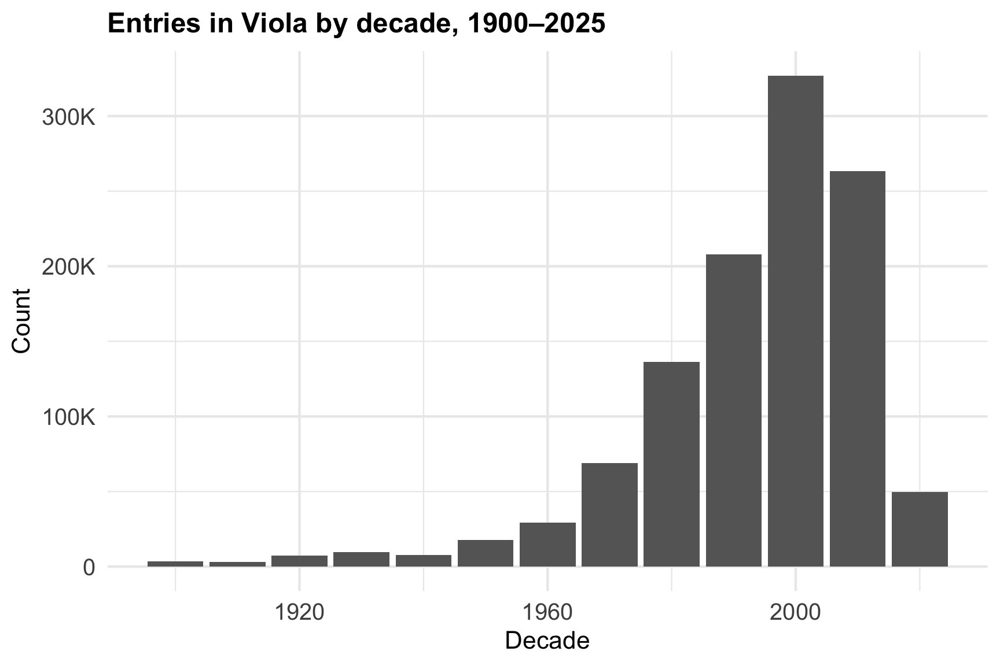
The dashed LOESS curve highlights the longer-term trend.
p2 <- viola_clean %>%
count(Year) %>%
ggplot(aes(x = Year, y = n)) +
geom_line(color = "grey35", linewidth = 0.8) +
geom_smooth(
method = "loess",
se = FALSE,
linetype = "dashed",
color = "grey55",
linewidth = 0.9
) +
scale_y_continuous(labels = count_labels) +
labs(
title = "Annual entries in Viola, 1900–2025",
x = "Year",
y = "Count"
) +
base_theme
p2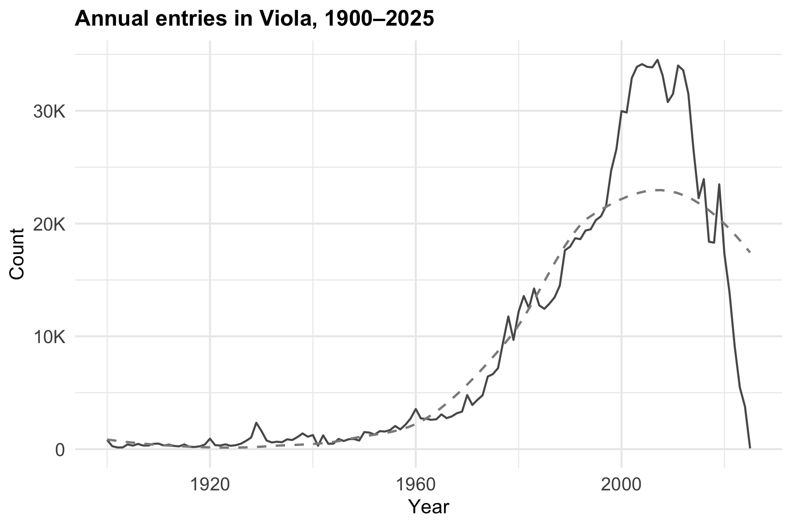
p3 <- viola_clean %>%
count(Language, sort = TRUE) %>%
ggplot(aes(x = fct_reorder(Language, n), y = n)) +
geom_col(fill = "grey40") +
coord_flip() +
scale_y_continuous(labels = comma) +
labs(
title = "Top publication languages",
x = "Language",
y = "Count"
) +
base_theme
p3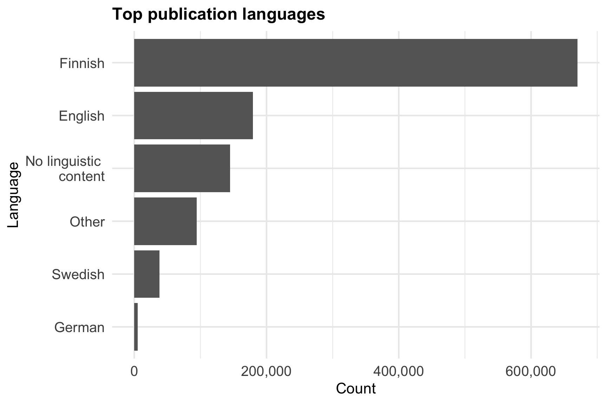
Absolute language counts by decade, highlighting how dominant languages change over time.
p4 <- viola_clean %>%
count(Decade, Language) %>%
ggplot(aes(x = Decade, y = n, fill = Language)) +
geom_col() +
scale_y_continuous(labels = count_labels) +
scale_fill_manual(values = lang_pal[levels(viola_clean$Language)]) +
labs(
title = "Language shifts over time",
x = "Decade",
y = "Count"
) +
base_theme +
theme(legend.position = "none")
p4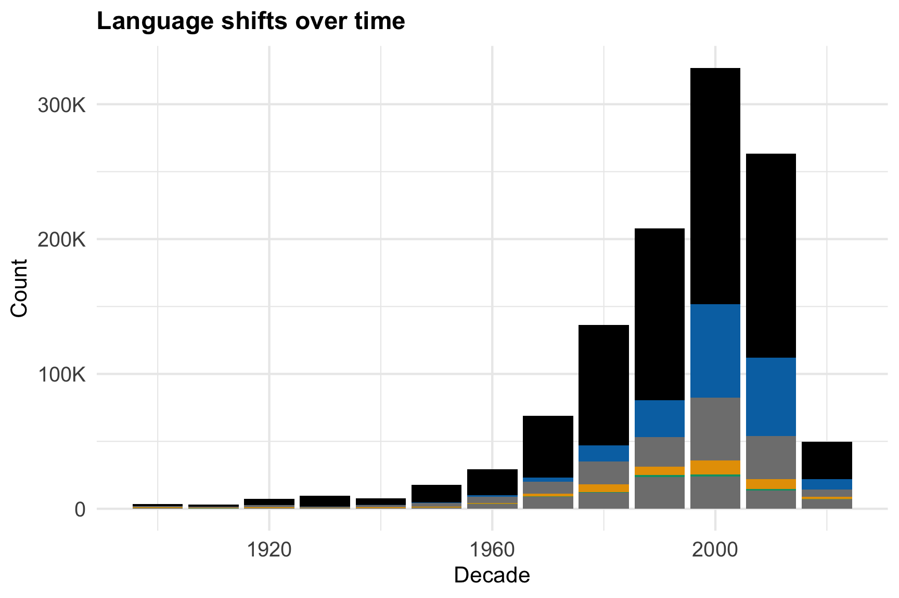
Relative language composition within each decade, removing the effect of changing total record counts over time.
p5 <- viola_clean %>%
count(Decade, Language) %>%
group_by(Decade) %>%
mutate(Proportion = n / sum(n)) %>%
ungroup() %>%
ggplot(aes(x = Decade, y = Proportion, fill = Language)) +
geom_col(position = "fill") +
scale_y_continuous(labels = percent_format()) +
scale_fill_manual(values = lang_pal[levels(viola_clean$Language)]) +
scale_x_continuous(limits = c(min(viola_clean$Decade), decade_max)) +
labs(title = "Language proportions by decade", x = "Decade", y = "Proportion") +
base_theme +
theme(legend.position = "bottom")
p5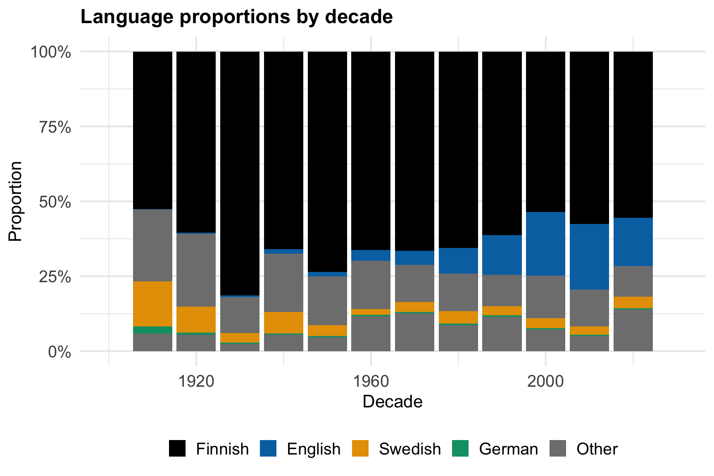
The balance of major Viola formats by decade — more informative than a simple total format-count plot, since it reveals structural change in the collection over time.
top_formats <- viola_clean %>%
filter(!is.na(Format_lab), Format_lab != "") %>%
count(Format_lab, sort = TRUE) %>%
slice_head(n = 3) %>%
pull(Format_lab)
p6 <- viola_clean %>%
filter(!is.na(Format_lab), Format_lab != "") %>%
mutate(
Format_group = ifelse(Format_lab %in% top_formats, Format_lab, "Other"),
Format_group = factor(Format_group, levels = c(top_formats, "Other"))
) %>%
count(Decade, Format_group) %>%
group_by(Decade) %>%
mutate(Proportion = n / sum(n)) %>%
ungroup() %>%
ggplot(aes(x = Decade, y = Proportion, fill = Format_group)) +
geom_col(position = "fill") +
scale_y_continuous(labels = percent_format()) +
scale_fill_manual(values = format_pal[levels(
factor(c(top_formats, "Other"), levels = c(top_formats, "Other"))
)]) +
labs(
title = "Format composition by decade",
x = "Decade",
y = "Proportion"
) +
base_theme +
theme(legend.position = "bottom")
p6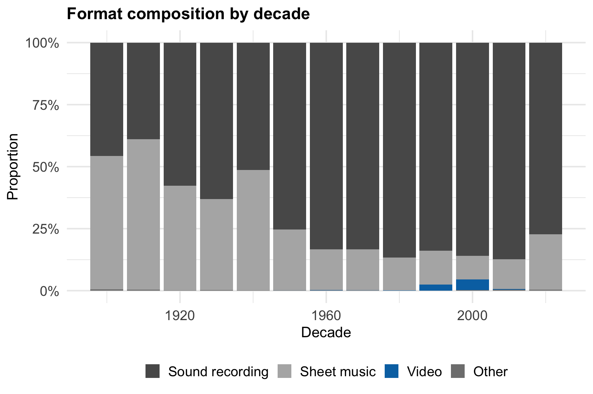
viola_combined <-
(p1 + p2) /
(p3 + p4) /
(p5 + p6) +
plot_layout(guides = "collect") +
plot_annotation(
title = "Viola collection trends and language analysis, 1900–2025"
) &
theme(
legend.position = "bottom",
plot.title = element_text(size = 23, face = "bold")
)
viola_combined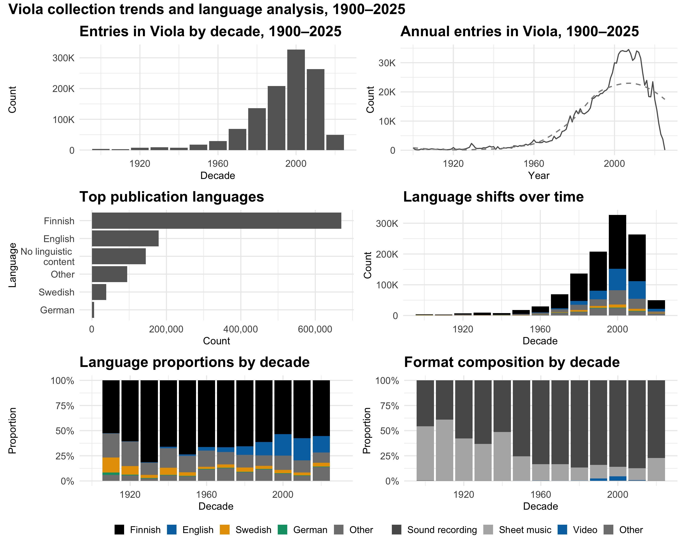
ggsave(
"viola_6panel_1900_onwards.png",
viola_combined,
width = 15,
height = 12,
dpi = 300
)This section focuses specifically on the three core music-related formats — sheet music, sound recordings, and video — comparing language dynamics within each major musical material type.
Repeated here so this section can be run independently if needed. Only the three target formats are retained.
lang_code_map <- c(
"fin" = "Finnish",
"swe" = "Swedish",
"eng" = "English",
"deu" = "German",
"ger" = "German",
"rus" = "Russian",
"fra" = "French",
"fre" = "French",
"lat" = "Latin",
"est" = "Estonian",
"zxx" = "No linguistic \n content"
)
lang_fi_map <- c(
"suomi" = "Finnish",
"ruotsi" = "Swedish",
"englanti" = "English",
"saksa" = "German",
"ranska" = "French",
"venäjä" = "Russian",
"latina" = "Latin"
)
language_map <- c(lang_code_map, lang_fi_map)
format_map <- c(
"äänite" = "Sound recording",
"nuotti" = "Sheet music",
"video" = "Video"
)
label_en <- function(x, map) {
x0 <- tolower(trimws(x))
out <- unname(map[x0])
ifelse(is.na(out) | out == "", x0, out)
}
quiet_pal <- c("#000000", "#E69F00", "#56B4E9", "#009E73", "#F0E442", "#0072B2")
base_theme <- theme_minimal(base_size = 16) +
theme(
plot.title = element_text(face = "bold", size = 16),
axis.title = element_text(size = 10),
axis.text = element_text(size = 10),
legend.title = element_blank(),
legend.text = element_text(size = 16),
strip.text = element_text(size = 16, face = "bold"),
plot.margin = margin(8, 8, 8, 8)
)Records are restricted to those with year and format information, after 1900, and limited to sheet music, sound recordings, and video.
viola <- viola_collection %>%
filter(!is.na(Year), !is.na(Formats)) %>%
mutate(
Year = suppressWarnings(as.numeric(Year)),
Decade = floor(Year / 10) * 10,
Format_raw = tolower(trimws(gsub(",.*", "", Formats))),
Format = label_en(Format_raw, format_map),
Language_raw = tolower(trimws(Language)),
Language_lab = label_en(Language_raw, language_map)
) %>%
filter(!is.na(Year), Year >= 1900) %>%
filter(Format %in% c("Sheet music", "Sound recording", "Video")) %>%
mutate(
Format = factor(Format, levels = c("Sheet music", "Sound recording", "Video"))
)
# Six most common languages for the composition plot; remainder -> "Other"
top_langs_b <- viola %>%
count(Language_lab, sort = TRUE) %>%
slice_head(n = 6) %>%
pull(Language_lab)
viola_b <- viola %>%
mutate(Language = ifelse(Language_lab %in% top_langs_b, Language_lab, "Other"))
# Top 3 languages overall (post-1900) for panel (c)
top3_langs <- viola %>%
count(Language_lab, sort = TRUE) %>%
slice_head(n = 3) %>%
pull(Language_lab)Annual growth patterns of sheet music, sound recordings, and video records. Missing year-format combinations are filled with zero so each format has a continuous time series.
year_grid <- seq(
min(viola$Year, na.rm = TRUE),
max(viola$Year, na.rm = TRUE),
by = 1
)
p1 <- viola %>%
count(Year, Format, name = "n") %>%
complete(Format, Year = year_grid, fill = list(n = 0)) %>%
ggplot(aes(Year, n)) +
geom_line(color = "grey35", linewidth = 0.7) +
geom_smooth(
method = "loess",
se = FALSE,
linetype = "dashed",
color = "grey55",
linewidth = 0.6
) +
facet_wrap(~Format, ncol = 3, scales = "free_y") +
scale_x_continuous(
breaks = c(1900, 1950, 2000, 2020),
expand = expansion(mult = c(0.01, 0.06))
) +
labs(
title = "Format expansion after 1900",
x = "Year",
y = "Number of entries"
) +
base_theme +
theme(legend.position = "none")
p1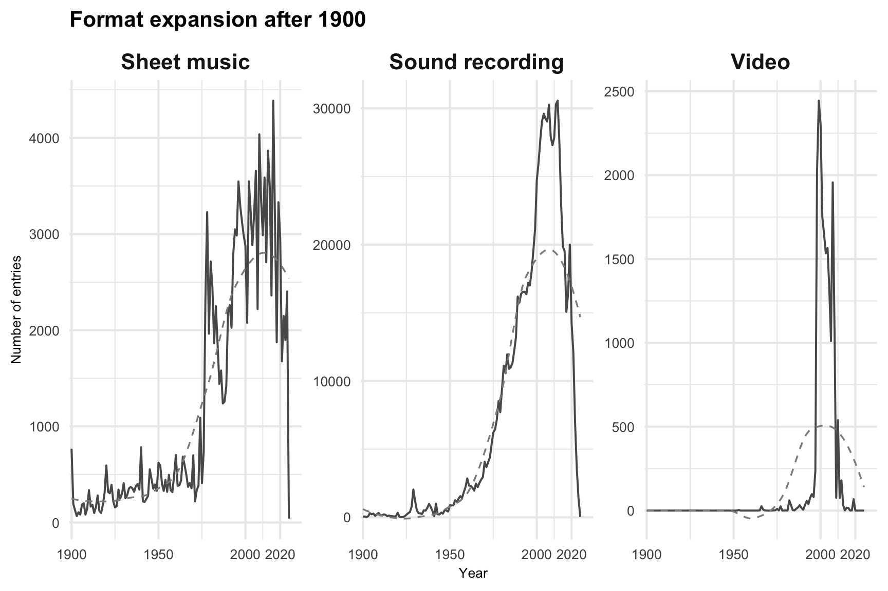
Language profile of each main format, shown as shares within each format.
p2 <- viola_b %>%
count(Format, Language, name = "n") %>%
group_by(Format) %>%
mutate(Share = n / sum(n)) %>%
ungroup() %>%
ggplot(aes(Format, Share, fill = Language)) +
geom_col(position = "fill") +
scale_y_continuous(labels = percent_format(), limits = c(0, 1)) +
scale_fill_manual(
values = rep(quiet_pal, length.out = n_distinct(viola_b$Language))
) +
labs(
title = "Language composition by format after 1900",
x = "Format",
y = "Share of entries"
) +
base_theme +
theme(legend.position = "bottom")
p2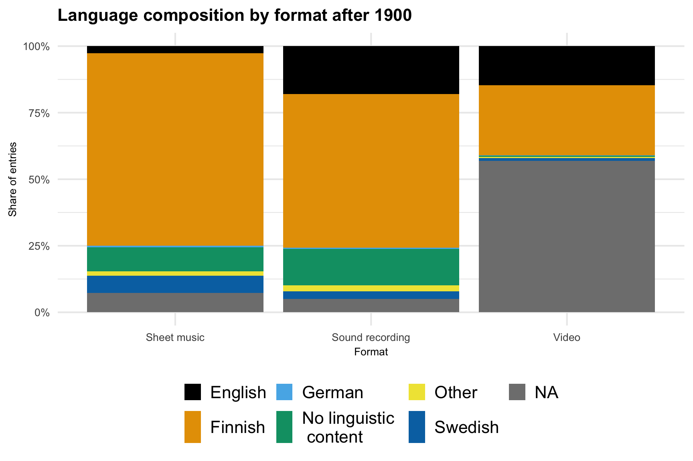
Absolute counts for the three most common languages within each major music format; faceting makes it easier to compare language structure across formats.
p3 <- viola %>%
filter(Language_lab %in% top3_langs) %>%
count(Format, Language_lab, name = "n") %>%
group_by(Format) %>%
mutate(Language_lab = fct_reorder(Language_lab, n)) %>%
ungroup() %>%
ggplot(aes(Language_lab, n)) +
geom_col(fill = "grey35") +
facet_wrap(~Format, ncol = 3, scales = "free_y") +
scale_y_continuous(labels = comma) +
labs(
title = "Top three languages by format after 1900",
x = "Language",
y = "Number of entries"
) +
base_theme +
theme(legend.position = "none")
p3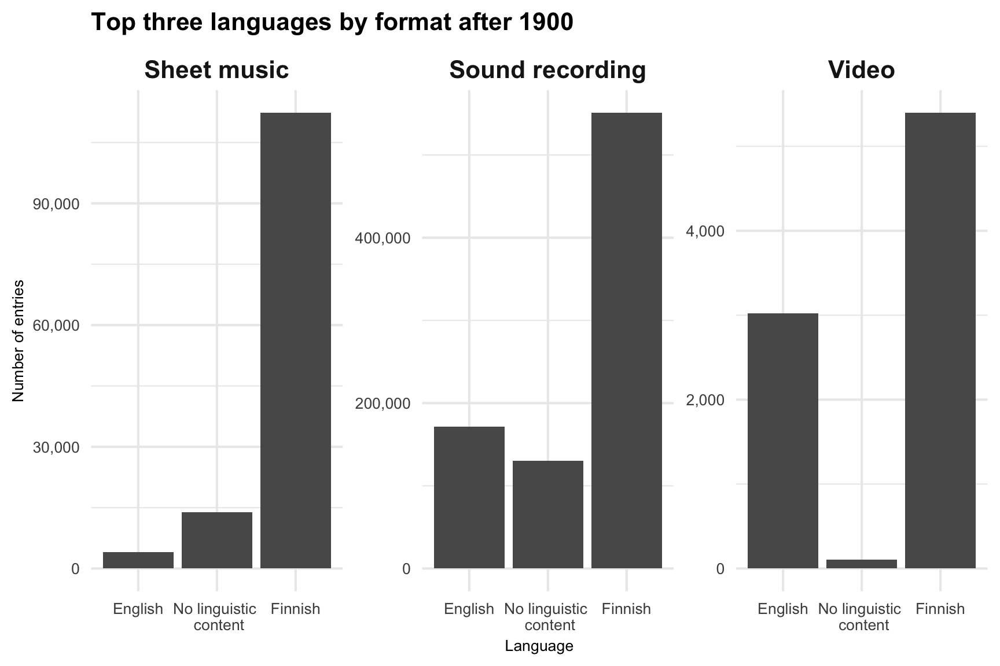
music_figure <-
(p1 / p2 / p3) +
plot_layout(guides = "collect") +
plot_annotation(
title = "Music metadata after 1900: format-specific language dynamics",
tag_levels = "a"
) &
theme(
plot.tag = element_text(size = 16, face = "bold"),
plot.title = element_text(size = 18, face = "bold"),
legend.position = "bottom"
)
music_figure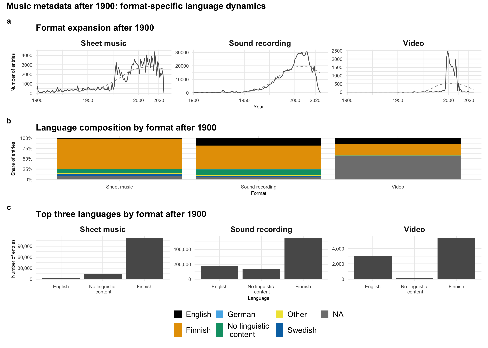
ggsave(
"viola_music_after1900_abc.png",
music_figure,
width = 14,
height = 10,
units = "in",
dpi = 300
)